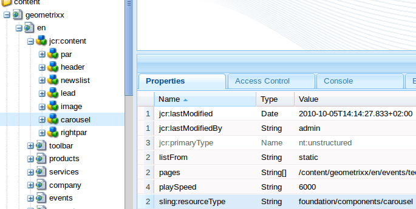
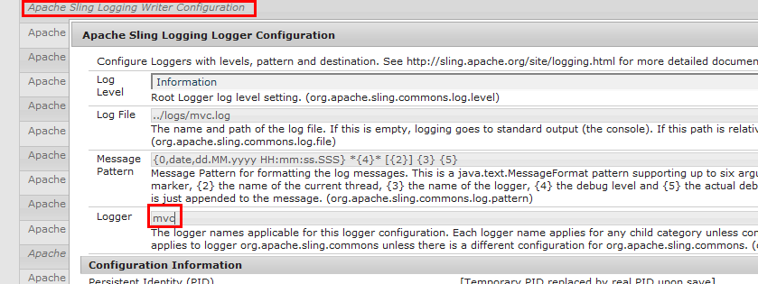

The fastest way to start with NEBA is to follow the Quick start guide.
Let's assume we need a simple JAVA model for the geometrixx site, specifically, for the "carousel" component. The carousel has the resource type "foundation/components/carousel":

I The resource type given in the @ResourceModel annotation must not be the exact resource type of the resource; you may also specify any resource super type of the resource, primary node type or mixin type. In our case, the resource super type of the carousel is "foundation/components/list" (see the carousel component in /libs/foundation/components/carousel). Try using this resource type in your model, and you will notice that it works, too. This way, you can provide general models for super types, and more specific models for derived types, e.g. a generic model for pages and a more specific model for specific page types.
Create the following class in your bundle package (i.e. within or below the "my.bundle.namespace" package)
{% highlight java %} @ResourceModel(types = "foundation/components/carousel") public class Carousel { } {% endhighlight %}
Build it and install the bundle in the OSGi container. Make sure the bundle is active. Now open the NEBA model registry tab in the sling console. Your model should appear in the model list. If not, check the error.log; something might be wrong with your bundle - e.g. it might not be detected by gemini-blueprint.
I Classes annotated with @ResourceModel are regular spring beans. If you look at the @ResourceModel annotation, you will notice that it is itself annotated with @Component (a spring stereotype) and @Scope(PROTOTYPE). With these annotations, the class is detected by Spring's classpath scanning. It is entirely possible to give your model a different scope (such as singleton) if it represents a "static" piece of content, such as configuration content stored under /etc/. Furthermore, all capabilities of the spring container are available to the model, such as IOC (dependency injection), e.g. using the JSR-330 @Inject annotation, bean lifecycle annotations such as @PostConstruct and @PreDestroy, @Scheduled methods and so forth.
To use this model in a JSP, add the neba:defineObjects tag to the carousel script: /libs/foundation/components/carousel/carousel.jsp:
{% highlight java %}<%@taglib prefix="neba" uri="http://www.neba.io/taglibs/cq/neba/core/1.0"%>
neba:defineObjects looks up the most specific model for the current resource and publishes it into the JSP context under the key "m". You may now output the model like so:
{% highlight java %}${m}{% endhighlight %}
The most specific model is the one that is targeted to the closest resource's type within a resources hierarchy. For example, of the resource has the type "cq:Page" and the super type "nt:base", a model for "cq:Page" is more specific than one for "nt:base". If there are more than one most specific models, e.g. two models for "cq:Page", the neba:defineObjectsTag will not provide the model automatically. Then, you can explicity specify the desired model's bean name (you can lookup the bean name in the model registry):
{% highlight java %}
To make it more interesting, we can now add some of the resource's properties to the model. You can see the properties e.g. in the CRXDE light.
Let's take "pages", "playSpeed", "transTime" and add them to the model:
{% highlight java %}
@ResourceModel(types = "foundation/components/carousel")
public class Carousel {
private String playSpeed;
private String transTime;
private List
Now build and deploy your bundle again and output the properties in the JSP like so:
{% highlight java %}Play speed: ${m.playSpeed}
Trans time: ${m.transTime}
Pages: ${m.pages}
{% endhighlight %}
You will see the following output:
{% highlight java %}Play speed: 6000 Trans time: 1000 Pages: {% endhighlight %}
NEBA automatically maps the properties of a Resource to fields named like the properties, unless the field is annotated with @Unmapped. Notice that play speed and trans time are Strings in this example, whereas one would expect them to be integers. This is simply because these values are defined to be Strings in the component's CQ dialog. Had they been defined as integers, we could also retrieve them as integers. You will also notice that "pages" is null. And no wonder - the "pages" property is actually of type "String[]", so the field should also be of type String[] and not List<Resource>. However, NEBA offers a simple way to declare that a field contains one ore more references to other Resources. Simply add the @Reference annotation like so:
{% highlight java %}
@Reference
private List
Deploy, and load the page again. Now all referenced pages get listed:
{% highlight java %}Play speed: 6000 Trans time: 1000 Pages: [JcrNodeResource, type=cq:Page, superType=null, path=/content/geometrixx/en/events/techsummit, JcrNodeResource, type=cq:Page, superType=null, path=/content/geometrixx/en/events/userconf, JcrNodeResource, type=cq:Page, superType=null, path=/content/geometrixx/en/events/shapecon, JcrNodeResource, type=cq:Page, superType=null, path=/content/geometrixx/en/events/dsc] {% endhighlight %}
When NEBA detects a @Reference annotation, it assumes that the value of the corresponding property (here: "pages") is one or more resource paths. It obtains the corresponding resources and provides them as a Collection (or a single resource, if the annotated field is not a collection type). However, you are not limited to using "Resource" for your reference. The following also works, provided there is a "Page" model the referenced resources can be adapted to:
{% highlight java %}@Reference
private List
Here, NEBA loads the resource referenced in the "pages" property, adapts each resource to "Page" and returns a collection containing the resulting Page instances.
While the page hierarchy is conveniently navigable using the Page model (i.e. using getChildren()), one often uses the children of a resource (via Resource.listChildren()), for instance when loading the contents of a paragraph system. For this, NEBA offers another powerful annotation: @Children. This annotation can be used on a Collection, Set or List-typed field (similar to the @Reference-annotation). Then, NEBA injects the children of either the current resource (if no other annotation is present), or of the resource defined by the @Reference or @Path of the field:
{% highlight java %}@Children
private List
Of course, NEBA will also automatically adapt the children to the generic type of the list - for instance, you could write:
{% highlight java %}
@Children
private List
@Children can be combined with both @Reference and @Path to even fetch the children of a reference resource or a resource designated by a specific path, i.e. the following works as well:
{% highlight java %}
@Path("/content/site")
@Children
private List
Now, lets add another property to the model, jcr:lastModified.
{% highlight java %}private Date lastModified;{% endhighlight %}
This will not yet work - NEBA mapps the properties by name, in this case the name contains characters ("jcr:") unsuitable for a field name. In this case, use the @Path annotation to specify the property from which the field's value shall be obtained:
{% highlight java %} @Path("jcr:lastModified") private Date lastModified; {% endhighlight %}
Now the property is mapped! @Path has even more interesting features, for instance allowing absolute and relative paths. Try this:
{% highlight java %} @Path("/content/geometrixx/en") private Resource en; {% endhighlight %}
While specifying path is nice, it is often undesirable. Thus, it is possible to use placeholders in the @Path mappings to dynamically provide path elements. A better version of above code might be:
{% highlight java %} @Path("/content/geometrixx/${language}") private Resource homepage; {% endhighlight %}
To resolve ${language} placeholder, one simply provides a bean implementing the PlaceholderVariableResolver interface. Such a bean instance will be asked to resolve the value for a placeholder key, i.e. "language" in the above example. A completely hardcoded example would be:
{% highlight java %} @Service public class MyVariableResolver implements PlaceholderVariableResolver { public String resolve(String variableName) { if ("language".equals(variableName)) { return en; } return null; } } {% endhighlight %}
This tutorial uses "Resource" for simplicity's sale. If you specify a different type, NEBA will automatically try to adapt the referenced Resource to the target type. Instead of List<Resource> pages in the above example, you could also provide a model for pages and write the following:
{% highlight java %}
@Reference
private List
The same applies to members injected with an absolute @Path and the @This annotation; if you have multiple models compatible to your resource, you may also write:
{% highlight java %} @This private OtherModel resource; {% endhighlight %}
You can also use the @This annotation to obtain the Resource that is mapped onto the model:
{% highlight java %} @This private Resource resource; {% endhighlight %}
I A @ResourceModel is not restricted to sling:resourceType's - you can also map it to the JCR primary node type or any of the mixin types of a Node. For example, let's assume that you have a requirement to implement a custom access protection of arbitrary content. IN addition, an editor may configure access restriction to any content (e.g. pages or a DAM assets). In this case we neither know the resource types nor the content paths to which the protection applies in advance. Here, using a mixin node type could help. A mixin can be assigned to any node at any time anywhere in the content hierarchy. It can define additional properties that can be set on the node, such as a set of properties defining how an access restriction is configured. Let us assume a protected content is assigned the mixin "myProject:AccessRestricted". You may then create a model for any access restricted content like so:
{% highlight java %} @ResourceModel(types = "myProject:AccessRestricted") public class AccessRestricted { .... } {% endhighlight %}
Finally, you could adapt to this model (e.g., in a view or filter) to determine whether the corresponding resource has restricted access, and what the restrictions are.
Further reading: JCR repository spec, administering node types.
I The Sling webframework is a REST architecture implementation. Consequently, it treats each thing it works with (every piece of content, every script, servlet) as a Resource. Resources are strongly typed by their attribute sling:resourceType. Thus, every component we are writing and every piece of content (i.e. concrete component instance created by an editor by placing a component on a site) has a resource type. Resource types - very much like types in many other languages - also support inheritance by means of a sling:resourceSuperType attribute.
Resource types are used by Sling to determine the view(s) that shall be used to render the resource. It does so by adding a prefix such as /apps or /libs to the resource type and checking whether it finds views for the resource in the corresponding directory.
Furthermore, any content stored in the JCR is represented by a javax.jcr.Node - this node also has a primaryType as well as one or more mixin types and super types.
In order to provide a JAVA model for a resource, it thus makes sense to either associate it with the resource's sling:resourceType or the resource's JCR type. This association is represented using a @ResourceModel annotation.
It is often required to perform some additional initializations after all properties of a @ResourceModel are mapped. NEBA supports this use case with the @PostMapping and @PreMapping annotations. Similar to @PostConstruct and @PreDestroy from standard Java, these annotations mark methods to be invoked after all properties of a resource model are mapped from its resource:
{% highlight java %}@ResourceModel(types = "my/model/type") public class MyModel { @This private Resource resource; @PostMapping public void initializeSomething() { // resource is initialized at this point. this.resource.adaptTo... } } {% endhighlight %}
Likewise, @PreMapping allows for method execution before any properties of the resource are mapped.
Beans in Spring have scopes. By default, beans are application scoped
(i.e. singletons). @ResourceModels have prototypical scope, i.e. they are re-created every time they are obtained from
the bean factory. In a web context, objects may also be scoped to the current request or the current session.
NEBA provides support for the request scope, i.e. a bean may be defined like so:
{% highlight java %} @Component @Scope(WebApplicationContext.SCOPE_REQUEST) public class MyType { ... } {% endhighlight %}
However, the session scope is currently not supported since it leads to a lot of issues (lack of scalability due to the need of session stickiness to an instance, high memory usage, serialisation etc.) In a RESTful Application, the session should not be used. User data may instead be stored in a cookie; if server-side state inevitable, storing it in a shared data store (e.g. a shared JCR repository or relational DB) and retrieving it upon request is a much more scalable, cleaner solution.
While JSP provides solid templating for Sling, it's not that great at rendering objects that are not resources. Custom models, e.g. database entities or build-in types such as java.util.Date are quite often rendered repeatedly in different templates. Also, you may want to render different variants of the same resource or object but may not be able to make use of selectors, suffixes or extensions in the URL. Finally, rendering resources outside of a request - for instance in a scheduled task - may be desirable. NEBA provides a simple solution: Any object can be rendered with velocity.
Velocity uses .vlt templates. NEBA stores these templates in the JCR. Where exactly the templates are located is configurable via the sling console. Look up the configuration "Sling spring Bean Renderer configuration". Each line of the configuration binds a path in the repository to an arbitrary name. The combination of name and path is used by NEBA to provide a BeanRenderer instance via the BeanRendererFactory OSGi Service under the given name. This makes it possible to define multiple view repositories (e.g. for rendering the same type of object in different ways for different sites).
By default, i.e. if no renderer is explicitly specified, the renderer named "default" is used. If not yet configured, add the following line to the configuration:
{% highlight java %}default:/apps/neba/views/{% endhighlight %}
Let's continue by editing carousel JSP template (/libs/foundation/components/carousel/carousel.jsp). Replace the ${m.lastModified} with the following JSP tag:
{% highlight xml %}
If you have no model for the current resource, you may also simply use the properties object (a Map) provided by sling, like so:
{% highlight xml %}
Reload - you will see no output. Let's create a template. Open CRXDE and create the folder /apps/neba/views. In this folder, create the folder /java/lang/. In there, create a file named "Object.vlt" like so:
{% highlight java %}Hello, I am: $m{% endhighlight %}
Reload. You will see something like "Hello, I am: Tue Dec 05 14:14:27 CEST 2011". How did this happen? NEBA uses the type hierarchy of every object it renders to derive a template name. If no template exists for a object's type, it will look for a template for the interfaces the object implements; if no template exists for any of the interfaces, it will use the supertype and its interfaces and so on. This way, you can use the type hierarchy to define default views for types and provide specialized views for derived types. NEBA stores the templates in a hierarchy matching the object types package name to avoid name collisions. for a type called my.package.Foo, the template is thus <renderer root path>/my/package/Foo.vlt. Try it: create the folder /java/util/ in /apps/neba/views/ and place a template called Date.vlt in it:
{% highlight java %}I am the date: $m{% endhighlight %}
Reload - NEBA will now use you Date.vlt template. Sweet - now no matter where you output a date you can
always use the render tag and thus re-use the same template. This mechanism can be used for any JAVA object!
You can also create variants of the same view. A java.util.Date, for instance, may be rendered in different ways
with regard to the current locale. For this, the render tag allows the specification of a viewHint.
Create the following a templated called "Date-US.vlt" in the java/util folder:
{% highlight java %}I am a US date: $m{% endhighlight %}
You can now use this view like so:
{% highlight xml %}
I The velocity engine is configured to cache a template for 60 seconds; this is configurable in the sling console (Unic sling spring bean renderer configuration). You can also specify "fallback" templates with view variants, e.g. the fallback for Date-CH.vlt would be Object-CH.vlt (not Object.vlt). If you configure multiple bean renderers, you can target the in the render tag by providing their name via the "renderer" property.
Rendering an object must not stop in the current template. The current BeanRenderer is always available in your template under the name "renderer" (see Constants class in the API). This is great when rendering objects that are composed of several other objects. You may, for example, render our Carousel model like so:
{% highlight xml %}
With a velocity template like so:
{% highlight xml %}
I am a Carousel. I was last modified at $renderer.render($m.lastModified)
I contain the following pages:
Thus, each page resource would be rendered using the template "Resource-listitem.vlt":
{% highlight xml %}
This yields optimal re-use of views per type.
You may also want to add additional utilities to the rendering context to access using ${somekey}, such as a tool for message formatting and the like. For this, NEBA supports the Sling scripting variables configuration. However, adding variables by supplying a HashMap service interface is not supported (this is considered bad practice), i.e. to add scripting context variables, export a Service of the type BindingsValuesProvider. The "javax.script.name" service property must either be "all" or "velocity".
Besides the BindingsValuesProvider, you can also add additional key/value pairs to the context of a specific <neba:render ... /> call by adding arbitrary attributes to the tag, like so:
{% highlight xml %}
This will lead to the variables "${cssClasses}" and "${highlight}" to become available in the velocity script of the corresponding rendering process.
By default, Sling supports two kinds of scripts: JSPs to render arbitrary JCR resources and Servlets. While the former is a decent way to render dynamic resources, i.e. content pages and components that have no fixed URL, the latter is usually used to provide RESTful services with a fixed URL. However, Servlets are very primitive. They do not provide separation of controller, model and view or commoon yet complicated features such as form data binding. Thus, NEBA completely supports Spring MVC (except for themes support, which relies on a style of resource loading incompatible with OSGi) to enable clean, simple and RESTful MVC with fixed URLs.
To avoid conflict with resource resolution and servlet mappings, Spring MVC is integrated into Sling using a Servlet with the fixed URL "/bin/mvc" (you may use servlet resolver mapping to change this path). Since each distinct path in sling mapps to a different resource (Servlets are resources, too), the path /bin/mvc/url would not point to the /bin/mvc/ servlet. Thus, to have a request handled by the MVC servlet, the pseudo-extension".do" is used. A spring controller with the URL /my/controller/path is thus always addressed using /bin/mvc.do/my/controller/path. One may also use an extension and selectors (e.g. /bin/mvc.do/my/controller/path.selector1.selector2.xml).
Let's create a simple Controller called "DemoController". We will use Spring's @Controller annotation; other styles (such as mapping by bean names etc.) are also supported. The purpose of this controller is to echo a parameter that we provide in a RESTful way, i.e. as a path element (this allows caching!).
{% highlight java %} @Controller public class DemoController { } {% endhighlight %}
A @Controller is also automatically detected and registered (as a singleton) by Spring's classpath scanning. Now we will use Spring's REST support to both define the URL the controller listens to and the parameter we expect:
{% highlight java %} @Controller public class DemoController { @RequestMapping("/echo/{param}") @ResponseBody public String echo(@PathVariable("param") String paramToEcho) { return paramToEcho; } } {% endhighlight %}
That's it. You may now call your controller e.g. with /bin/mvc.do/echo/HelloWorld.txt.
In addition, NEBA supports the common use case of handling resource paths in controllers with a convenience annotation:
{% highlight java %} @Controller public class DemoController { @RequestMapping("/echoTitle") @ResponseBody public String echo(@ResourceParam Page page) { return page.getTitle(); } } {% endhighlight %}
Here, a request parameter "page" is expected and treated as a path to a resource. This resource is resolved, and is adapted to the parameter type in case the parameter type is not "Resource". See the ResourceParam annotation for details.
Note that the annotation-driven controllers have a lot more very powerful options. See the Spring MVC documentation for more examples. NEBA also supports Spring's special view names for redirecting and forwarding views: returning "redirect:/some/path" from a controller method will cause a redirect to /some/path, returning forward:/some/path will forward the request to /some/path, see also MVC redirecting.
You may also directly work with the response. For this, provide your own org.springframework.web.servlet.View in the org.springframework.web.servlet.ModelAndView provided by the controller; this way, your View's render method is used to render the response. Alternatively, you may also simply write to the response and either let the controller method return "null" or make it void. This is however bad practice and thus discouraged.
Internal errors during controller invocation, e.g. when required parameters are missing, are logged to the logs/error.log on "warn" level by default. It is highly recommended to configure a separate logfile for these messages and disable this logging on production, since it is very likely for such exceptions to arise constantly due to user mistakes, bot activity and the like. To configure a custom logile, simply create a new Apache Sling Logging Logger Configuration using "mvc" as the Logger name, like so:
You may provide implementations of Handler adapters, Handler exception resolvers and Handler mappings in your application context and / or use Spring's <mvc> XML namespace configuration without limitations.
Lifecycle callbacks
Additional functionality is usually provided by simply adjusting the spring context configuration to the project needs (i.e. configuring beans and customizing the bean lifecycle).
However, there is an additional lifecycle phase of @ResourceModels in beans: after creation, dependency injection
and initialization, a resource model is injected with the properties of the resource which is adapted to the model.
For programmatic extensibility, the NEBA API contains the lifecycle callback interface ResourceModelPostProcessor.
Providing an OSGi service with this interface allows customization and even overriding of a ResourceModel before and
/ or after the resource properties are mapped on it. The demo project's com.unic.cq.foundation.demo.i18n
package and context.xml contain an example of how this lifecycle callback can be used to support an additional
annotation on a resource model.
NEBA's DefineObjectsTag and RenderTag are not extensible as they are part of the NEBA core to which a project must not have direct dependencies.Thus, writing a standalone tag library is the correct approach to avoid tight coupling to implementation details of the NEBA tag library.
NEBA's central and most performance critical feature is the adaptation of Resources to their corresponding resource models. There, resource and model resolution, content-to-object mapping and datatype conversion occurs. This core functionality features an extensible caching interface. Any OSGi service implementing the NEBA API interface ResourceModelCache will automatically be registered and used to cache the result of the resource to model adaptation.
NEBA ships with a safe and sensible default implementation of this interface contained in the core, the request-scoped resource model cache. This cache can be enabled or disabled via the Felix console (configuration tab). If you would like to provide your own caching implementation, consult the Javadoc of the ResourceModelCache for further information.